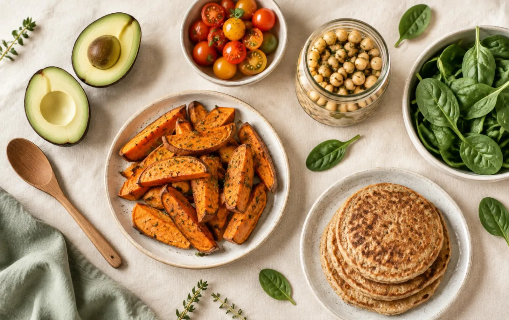
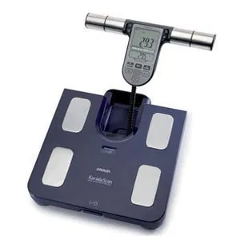

Dietoterapia en patología digestiva
7Celiaquía, intolerancias y alergias alimentarias, SIBO, intestino irritable, Crohn,...

Dietética y nutrición
Todo lo que puedo hacer por ti, de la primera consulta al seguimiento a largo plazo.
Nuestros servicios de nutrición
En nuestra consulta contamos con todos los servicios detallados a continuación, pero si tienes cualquier duda o consulta no dudes en ponerte en contacto con nosotras.
Celiaquía, intolerancias y alergias alimentarias, SIBO, intestino irritable, Crohn,...
Elaboraremos planes alimentarios personalizados: Con consultas presenciales, estudio dietético-nutricional, mediciones antropométricas, educación nutricional, y dietas personalizadas revisadas periódicamente.
- Valoración del estado nutricional:
- Historia clínica y social
- Valoración del análisis bioquímicos
- Historia dietética
- Análisis de la composición corporal mediante bioimpedancia y/o perfil antropométrico básico.
- Elaboración de dietas personalizadas y recomendaciones alimentarias:
- Pérdida de masa grasa
- Aumento de masa muscular
- Tratamiento de patologías
- Aumento de rendimiento deportivo
- Hábitos alimentarios saludables
- Asesoramiento y seguimiento dietético-nutricional método ¨coaching¨.
- Educación nutricional. Adquisición de estrategias nutricionales para diferentes situaciones como:
- Viajes
- Eventos sociales: bodas, cumpleaños, ect.
- Comer fuera de casa
- Evolución de la composición corporal mediante bioimpedancia y/o perfil antropométrico básico.
- Modificación de la dieta personalizada.
En todas nuestras consultas te mediremos con nuestra báscula de bioimpedancia para tener un estudio y posterior análisis de la composición corporal y perfil antropométrico.
La Bioimpedancia es una técnica que sirve para calcular el porcentaje de grasa corporal sobre la base de las propiedades eléctricas de los tejidos biológicos.
Es una técnica muy fiable para controlar el peso, ya que indica realmente la cantidad de grasa que pierde el individuo y sin ser invasiva.
Bioimpedancia En todas nuestras consultas te mediremos con nuestra báscula de bioimpedancia para tener un estudio y posterior análisis de la composición corporal y perfil antropométrico.

Damos servicio externo de asesoría a colegios, comedores escolares, residencias de estudiantes y geriatría, empresas, madres de día.